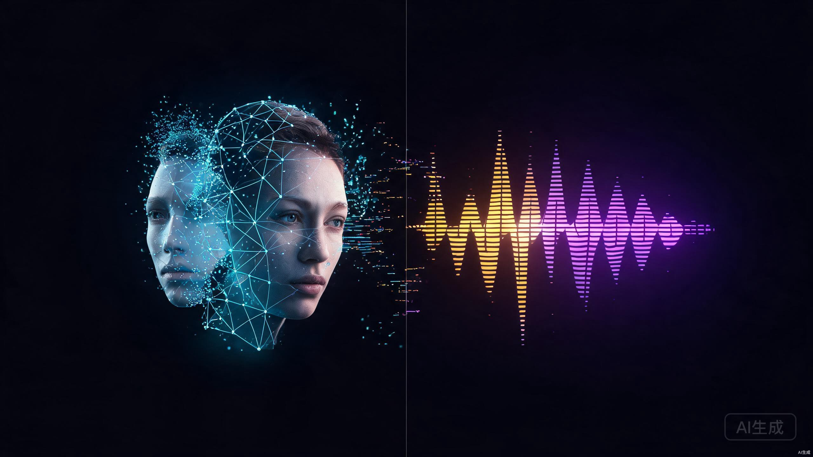
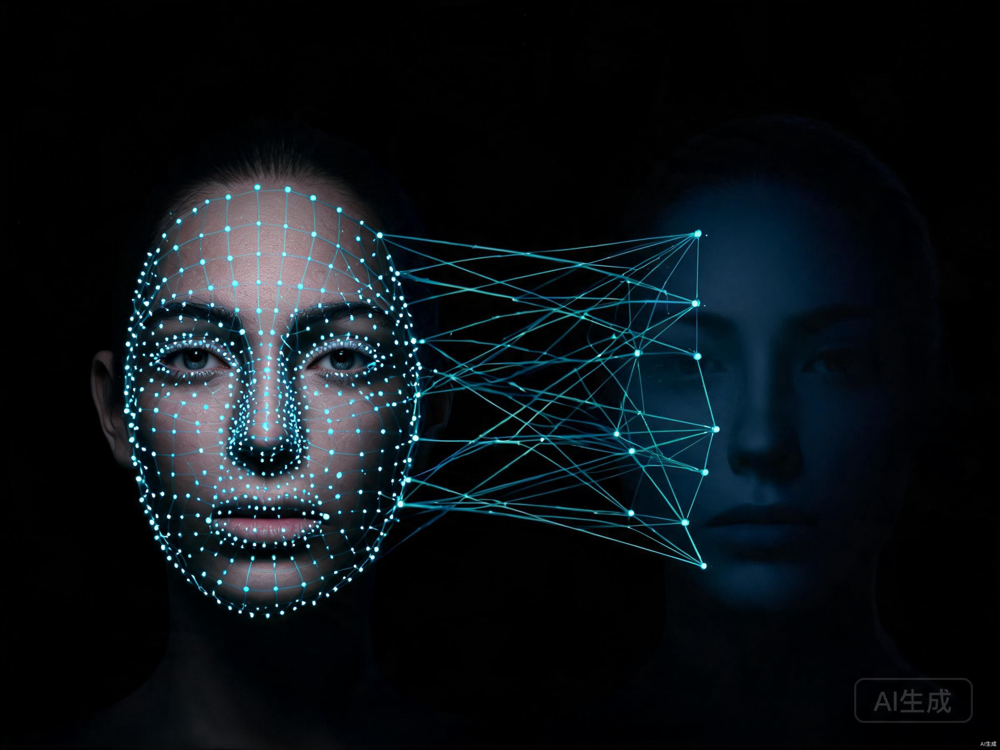
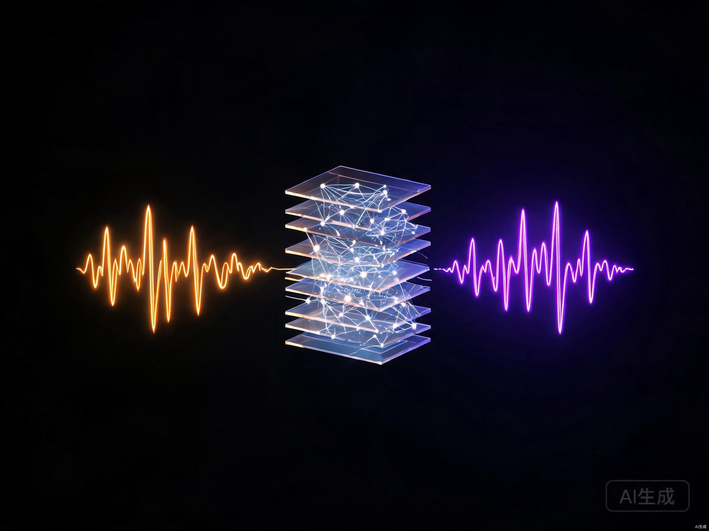
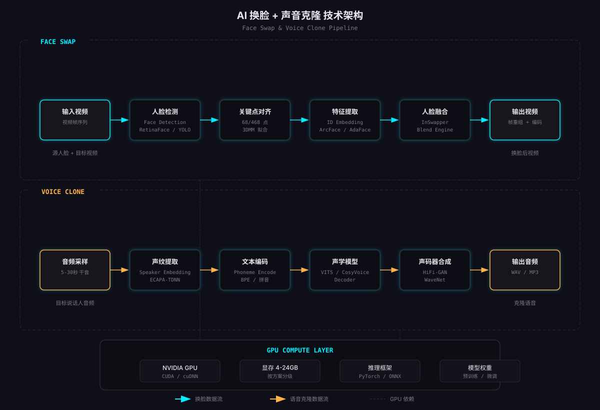

2024年一段「奥巴马骂拜登」的Deepfake视频在TikTok上播放了上千万次。画面里奥巴马的嘴型、表情、声音全都对得上，但每一帧都是假的。这不是什么实验室Demo，是一个叫 BKarp 的创作者用消费级显卡花了两小时做的。
第一次跑通换脸加声音克隆的完整流水线，感觉有点复杂又有点兴奋。复杂在于每个环节都有门道，兴奋在于一个人确实能干一个剧组的活。这篇文章把踩过的坑、对比过的工具、选过的硬件全写出来，帮你想清楚要不要入这个坑。
一、谁在用这些东西
先说市场。不是所有换脸都是恶搞，也不是所有声音克隆都是为了诈骗。
当然，灰色地带也很大。电信诈骗用克隆声音冒充亲友要钱，AI换脸生成不雅图片敲诈，伪造政治人物发言操纵舆论。杭州互联网法院2024年就判了一例：有人用AI换脸伪造他人面部制作不雅视频，以侵犯肖像权判赔[1]。技术本身是中性的，但用技术的人不是。
二、换脸原理：检测、对齐、融合
换脸听着像「把A的脸贴到B的脸上」，实际比这复杂得多。整个过程分三步。

第一步是人脸检测。从视频每一帧里找到人脸的位置和角度。主流方案用RetinaFace或YOLO-Face，在画面中框出人脸边界框。这一步不难，难的是侧脸、遮挡、模糊这些情况的鲁棒性。
第二步是关键点对齐。检测到人脸后，要精确定位68个或468个面部关键点。眉毛、眼睛、鼻梁、嘴角、下巴轮廓，每个点都对应面部的解剖结构。然后用3DMM（三维形变模型）把这堆点拟合成一个三维人脸模型。这一步决定了换脸后表情能不能跟上——如果对齐做不好，换上去的脸就像面具一样僵。
第三步是特征提取与融合。把源人脸的身份特征（不是表情，是「这张脸长什么样」）提取成一个向量，再用生成模型把这个身份特征「画」到目标视频每一帧的人脸上。最核心的算法是InsightFace的InSwapper，它用一个预训练的置换网络，把源人脸的ID embedding注入到目标帧的生成过程中。融合后再做色彩校正、边缘羽化、分辨率增强，让换上去的脸和原图光影一致。
三、声音克隆原理：从声纹到语音
声音克隆的原理和换脸思路类似：提取身份特征，再用这个特征生成新内容。只不过这里提取的不是人脸特征，而是声纹特征。

你给系统5到30秒某个人说话的干净录音（没有背景音乐、没有噪音），系统用ECAPA-TDNN或类似的声纹模型把这段音频编码成一个speaker embedding。这个向量捕捉了这个人的音色、语速、发音习惯。之后你输入任意文本，系统用这个embedding作为条件，通过声学模型和声码器合成出「这个人说这段话」的音频。
早期方案需要微调——拿目标人的几小时录音训练一个专属模型，效果好但成本高。2023年以后主流方案都转向零样本或少样本克隆：5秒干音就能克隆，不需要训练，推理时实时完成。GPT-SoVITS和CosyVoice走的就是这条路。
这里有个容易混淆的点。声音克隆和TTS（文字转语音）不是一回事。TTS是你选一个预置的声音（比如「微软晓晓」），把文字变成语音。声音克隆是你自己提供声音样本，让系统学会用「这个人的声音」来说话。前者是选声音，后者是造声音。
四、换脸工具横评：三个能打的
换脸开源项目不少，但真正能用于生产的不多。下面实测对比三个主流的。
| 项目 | FaceFusion | DeepFaceLab | Roop-unleashed |
|---|---|---|---|
| 定位 | 下一代换脸+增强 | 专业级深度换脸 | 轻量快速换脸 |
| 原理 | 特征置换（InSwapper） | 自编码器训练 | 特征置换（InsightFace） |
| 操作方式 | WebUI，一键换脸 | 命令行，多步骤手动 | WebUI，极简操作 |
| 最低显存 | 2GB（CPU可跑） | 4GB（需训练则8GB+） | 2GB |
| 画质 | 高 | 最高（可训练专属模型） | 中等 |
| 视频支持 | 图片+视频+实时 | 视频（批处理） | 图片+视频 |
| 维护状态 | 活跃更新 | 社区维护 | 停更风险 |
| 上手难度 | 低 | 高 | 低 |
建议：如果是第一次玩，直接上FaceFusion。它是Roop的精神继承者，WebUI做得好，CPU都能跑，图片视频一键搞定。DeepFaceLab画质天花板最高，但需要手动跑提取、训练、转换、合并四个阶段，适合有时间折腾的人。Roop-unleashed是原版Roop停更后的社区fork，能用但维护不稳定，不推荐长期依赖。
五、语音克隆横评：四个能选的
语音克隆这块竞争更激烈，2025年下半年又出了几个新选手。
| 项目 | GPT-SoVITS | CosyVoice 2 | XTTS-v2 | Fish Speech |
|---|---|---|---|---|
| 出品方 | RVC-Boss社区 | 阿里通义实验室 | Coqui AI | Fish Audio |
| 最少干音 | 5秒 | 3秒（零样本） | 6秒 | 10秒 |
| 中文效果 | 最佳 | 优秀 | 一般 | 好 |
| 多语言 | 中英日韩 | 中英 | 17种语言 | 中英日 |
| 最低显存 | 4GB | 6GB | 2GB | 4GB |
| 推理速度 | 快（RTF<0.3） | 中等 | 快 | 中等 |
| 情感控制 | 弱 | 强（可控情感） | 中等 | 中等 |
| 商用授权 | MIT | Apache 2.0 | MPL 2.0（受限） | CC BY-NC |
如果主要做中文内容，GPT-SoVITS和CosyVoice 2是唯二的选择。GPT-SoVITS社区活跃、文档全、5秒干音就能克隆，中文效果目前没有对手。CosyVoice 2的优势是情感可控——你可以指定「开心」「悲伤」「愤怒」的语气，GPT-SoVITS做不到。XTTS-v2多语言支持好但中文偏弱，适合做跨语言内容。Fish Speech效果不错但非商用授权，自己玩可以，商用要付费。
六、GPU选型：你的显卡能跑什么
换脸和声音克隆都吃GPU，但吃法不一样。换脸是吃显存带宽（视频帧逐张处理），声音克隆是吃算力（模型推理）。先看一张需求表。
| 显卡 | 显存 | 换脸 | 声音克隆 | 能干什么 |
|---|---|---|---|---|
| RTX 3060 | 12GB | FaceFusion流畅 | GPT-SoVITS流畅 | 入门首选，性价比最高 |
| RTX 4060 | 8GB | FaceFusion流畅 | GPT-SoVITS够用 | 新一代入门，功耗低 |
| RTX 4070 | 12GB | 全部流畅 | 全部流畅 | 均衡选择 |
| RTX 4090 | 24GB | 实时换脸 | 批量合成 | 生产级，可做实时直播 |
| 无GPU（CPU） | 共享内存 | FaceFusion可跑（慢） | 基本不可用 | 只适合图片换脸体验 |

七、实战：做一个数字人短片
把前面所有东西串起来，做一个完整的数字人短片：用一段名人演讲视频做底，换上自己的脸，再用克隆的自己声音配上新台词。
# 合并换脸视频和克隆声音 ffmpeg -i face_swapped.mp4 -i cloned_voice.wav \ -c:v copy -c:a aac -map 0:v:0 -map 1:a:0 \ -shortest final_output.mp4 # -map 0:v:0 取视频轨，-map 1:a:0 取音频轨 # -shortest 以较短的轨道为准截断
整个过程，从录音到成片，熟练的话15分钟。第一次做可能要花半天，主要时间在装环境和调参数上。
八、法律红线和使用底线
技术能做不等于应该做。这一节比前面所有技术内容都重要。
底线是：只用自己的脸和声音，或者有明确书面授权的人。做Demo可以用名人公开素材，但绝不公开传播。教学演示打码处理。这条线不复杂，守住就行。
参考资料
- 中华人民共和国民法典第一千零一十九条、第一千零二十三条（肖像权与声音权保护） https://www.gov.cn/xinwen/2020-06/02/content_5516537.htm
- FaceFusion: Next generation face swapper and enhancer, GitHub https://github.com/facefusion/facefusion
- DeepFaceLab: DeepLearning face swap, GitHub https://github.com/iperov/DeepFaceLab
- GPT-SoVITS: 1分钟语音克隆与TTS, GitHub https://github.com/RVC-Boss/GPT-SoVITS
- CosyVoice 2: Scalable Speech Generation, 阿里通义实验室 https://github.com/FunAudioLLM/CosyVoice
- XTTS-v2: Coqui TTS, GitHub https://github.com/coqui-ai/TTS
- InsightFace: 2D&3D Face Analysis Project, GitHub https://github.com/deepinsight/insightface